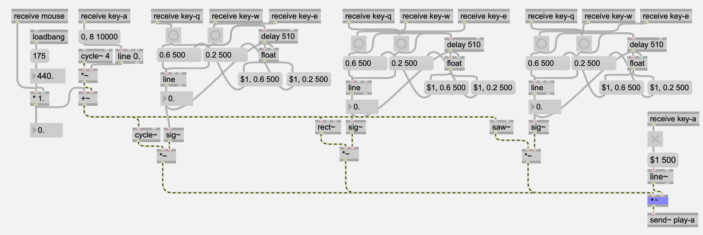

The Smooth Synthesizer
In Electroacoustic Sound Design, I was introduced to visual programming through MAX. It was a whole new world that left me confused, frustrated and blank.
My first project in the class was an additive synthesizer that would change the timbre of the sound by adjusting the balance of component sine, square and sawtooth waves. I wanted the transition betwen timbres to be ramped gradually, so that I could avoid the harsh clicking noises from sudden transitions. The value of the current waveform weights are fed into a temporary memory; when I command a timbre change, the value weights are adjusted linearly to the target weights.

Meanwhile, I also explored frequency and amplitude modulation as well. When I press and a hold a key, the not begins to vibrato; when I move the vertical position of the mouse, the pitch bends accordingly. While I had previously approached audio signal processing through filters and subtractive synthesis, it was exciting to create MAX patches that could generate whatever I wanted to create. From this project, I gained the initial experience that would later be developed to create MIDI looping pedals, stereo delay modules, and pitch shifters.